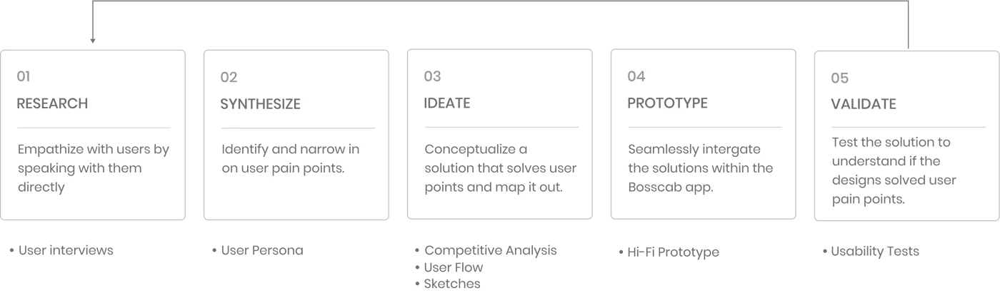
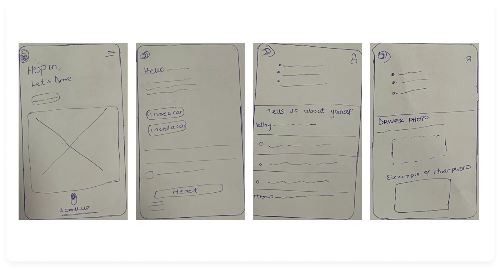
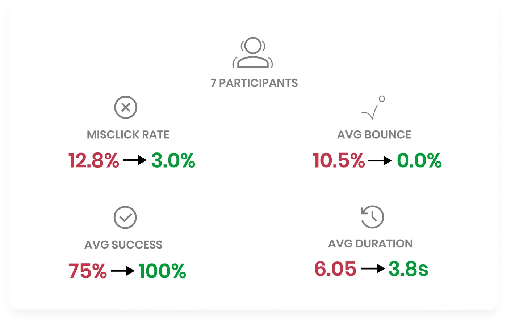

OVERVIEW
Bosscab is an app which offers a transportation service for
private drivers and riders between two locations. Bosscab is
vocal about its mission to be the friendlier, fairer option in
the rideshare space. Each client is different, which makes every
trip unique. However, this diversity is hard to identify for
drivers prior to meeting the passenger.
In anticipation of going public, Bosscab needed to show continued growth by attracting new riders and drivers. Increasing both at the same time would mean more rides, shorter wait times, and higher revenue.
The goal for the drivers registration portal is to design an easy registration experience and inspire more people to sign up or apply to without having to worry if they have car or not. Another goal is to solve user pain points by eradicting an onsight verification.
In anticipation of going public, Bosscab needed to show continued growth by attracting new riders and drivers. Increasing both at the same time would mean more rides, shorter wait times, and higher revenue.
The goal for the drivers registration portal is to design an easy registration experience and inspire more people to sign up or apply to without having to worry if they have car or not. Another goal is to solve user pain points by eradicting an onsight verification.
TEAM
Solo
DURATION
2 weeks
TOOLS
Figma
Photoshop
Protopie
SCOPE
UX Design
UI Design
UX Research
MY ROLE
Experience Strategy
In order to convert ideas, gain orientation and drive decision making, I developed a prototype. This aided to mirror design principles, share my vision and a content strategy for potential drivers. Design Execution & Validation
Design Execution & Validation
Throughout this process I executed user journeys, competitive analysis, prototyping UX designs, UX research and UI design.
THE CHALLENGE
From a certain data, i learnt that there 68% of car owners in
Lagos , Nigeria. This city has the largest population in West
Africa,with unemployment rate level of 58%. 30% of Lagos car
owners use them for ride hailing and there are 60% of users
legible to drive but do not own a car.
The goal for this project is to create a form of employment for
people who are eligible to drive by designing an easy registration
experience and inspire them to sign up or apply to drive without
having to worry if they have car or not. A registration process to
accommodate and link them up with car owners who do not wish to
drive.
Another goal is to solve user pain points by eradicating an on
sight verification.
How might we make Bosscab drivers registration more enjoyable
and less tedious?
The Process

01.
Research
Empathizing with Bosscab Drivers
US
ERS INTERVIEWS
In order to empathise with Bosscab users, I conducted user
interviews with 7 participants. I wanted to understand their pain
point while registering on other competitive ride hailing apps.
The goal was to make registration process easy and seamless. I
created an interview guide, which listed open-ended questions,
that helped me facilitate the interview.

02.
Synthesize
Identify User Pain Points
US
ER PERSONA
To analyse the qualitative data that I gathered through user
interviews,
focusing on what seemed the most feasible, I identified three pain points of the users’ experiences: too many steps registration , non authentic registration process, and desynchronised arrival times. I created a user persona to embody the key audience that would benefit the most from this new feature: a social, young professional in a large city. Creating a user persona helped to tackle the various pain points and needs generated from user research into a single "person" that I can easily reference during the design process.
focusing on what seemed the most feasible, I identified three pain points of the users’ experiences: too many steps registration , non authentic registration process, and desynchronised arrival times. I created a user persona to embody the key audience that would benefit the most from this new feature: a social, young professional in a large city. Creating a user persona helped to tackle the various pain points and needs generated from user research into a single "person" that I can easily reference during the design process.
USER PERSONA


03.
Ideate
Brainstorming Solutions
COMPETITIVE ANALYSIS, USER FLOW, SKETCHES
I brainstormed solutions and laid out potential solutions to the
user persona’s pain points. To guide me in creating more
solutions, I completed a competitive analysis to see how other
drivers registration apps solved similar issues and to see if
any of my ideas had already been implemented.

Structuring The Experience
USER FLOW, SKETCHES
Once I decided on my idea of adding a feature that gives users
the option to choose if they own a car or not and also
erradicated onsight registration, I created a task flow to map
out the steps the user will take to utilize this new feature.
This was challenging as a new feature must not feel out of place
in the current flow, and creating a framework was important for
sketching out the screens.


04.
PROTOTYPE
Prototyping, Testing, and Refining the Solution
HIFI PROTOTYPE, USABILITY TESTING
Using my sketches, I created a hi-fi prototype to test the feature that eradicates on-sight registration. My main goal was to validate the potential demand for this feature as well as quickly assess and uncover any usability issues I may have overlooked. I gathered 8 participants and utilised Maze, a rapid prototyping tool, and discovered a few usability issues within the prototype. I then brainstormed solutions and made several adjustments to directly address user’s feedback.
Using my sketches, I created a hi-fi prototype to test the feature that eradicates on-sight registration. My main goal was to validate the potential demand for this feature as well as quickly assess and uncover any usability issues I may have overlooked. I gathered 8 participants and utilised Maze, a rapid prototyping tool, and discovered a few usability issues within the prototype. I then brainstormed solutions and made several adjustments to directly address user’s feedback.

Solving Usability Bugs
USABILITY TESTING
I conducted a second usability test with 7 new participants and
found that the redesigns directly addressed the usability issues
uncovered from the first test. I found there was a large
improvement in several usability metrics, including mis click
rate, average duration, and bounce rate. The users were able to
complete the tasks more quickly, with a higher success rate.
